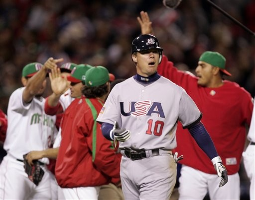
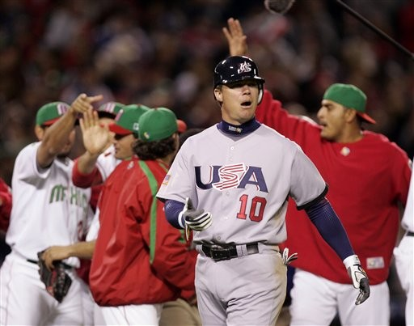

2006
美墨之戰被沒收的全壘打
複賽第一組第六場美墨之戰的第三局下半，墨西哥隊打者 Mario Valenzuela 擊出了一支全壘打，球擊中了右外野全壘打牆上的標竿，然後彈回場內。根據棒球規則，這應該算是全壘打，然而這場比賽的一壘審判定球擊中全壘打牆而彈回來，所以是一支二壘安打。墨西哥隊教練向裁判抗議，不過裁判只給了他一次警告，並未更改判決。
複賽第一組第六場美墨之戰的第三局下半，墨西哥隊打者 Mario Valenzuela 擊出了一支全壘打，球擊中了右外野全壘打牆上的標竿，然後彈回場內。根據棒球規則，這應該算是全壘打，然而這場比賽的一壘審判定球擊中全壘打牆而彈回來，所以是一支二壘安打。墨西哥隊教練向裁判抗議，不過裁判只給了他一次警告，並未更改判決。
